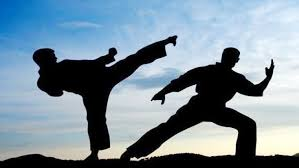
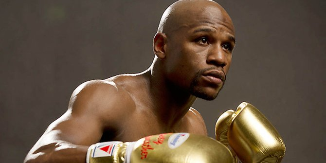

"STOP DREAMING START DOING"
OLAHRAGA
Olahraga adalah aktivitas untuk melatih tubuh seseorang, tidak hanya secara jasmani tetapi juga secara rohani (misalkan catur). Olahraga dapat dilakukan bersama-sama.
SEJARAH OLAHRAGA

Menurut catatan sejarah, taekwondo ini telah berkembang sejak tahun 37 Masehi, tepatnya pada masa dinasti koogoryo di korea.
Pada masa itu, masyarakat menyebut taekwondo dengan nama yang berbeda-beda, seperti Subak, Taekkyon, taeyon.
Sejak saat itu pula, taekwondo telah menjadi seni pertahanan bela diri yang digunakan para ksatria dinasti Chosun kuno, kerajaan Shila, dan dinasti Koryo pada masa kejayaannya, serta taekwondo juga kerap dijadikan pertunjukan acara ritual yang dilakukan oleh bangsa Korea.
Pada saat Korea meraih kemerdekaannya di tahun 1945, masyarakat Korea berusaha dengan keras untuk mengembangkan seni bela diri taekwondo ini, karena taekwondo merupakan salah satu seni bela diri tradisional Korea.
Dan hingga akhirnya, taekwondo tumbuh dengan pesat hingga keseluruh penjuru dunia dan telah dipertandingan di ajang terbesar olimpiade empat tahunan.
Di tahun 1973, tepatnya pada tanggal 28 mei, terbentuklah suatu organisasi bernama WTF (World Taekwondo Federation) yang bermarkas di Kukkiwon, Korea Selatan.
Pada waktu itu, Kim Un Yong ditunjuk sebagai presiden pertama dalam organisasi tersebut. Dan sampai sekarang, WTF telah memiliki anggota lebih dari 186 negara di seluruh dunia.

Seperti yang telah kita ketahui, bahwa sebagian besar masyarakat di dunia ini yakin bahwa karate merupakan olahraga seni bela diri yang berasal dari Jepang.
Namun, perlu kalian ketahui bahwa sebetulnya Jepang ini hanya mengembangkan sebuah bela diri tinju dari Cina ciptaan Darma, guru Budha yang Agung.
Pada mulanya, tepatnya sekitar abad ke 16 Masehi, karate masuk ke negara Jepang lewat pulau Okinawa yang pada saat itu sedang dijajah oleh Jepang.Lalu, Jepang membuat sebuah peraturan bahwa semua penduduk Okinawa tidak ada yang boleh mempunyai jenis senjata apapun.
Dan kemudian, seorang pedagang yang berasal dari Cina mengajarkan suatu bela diri secara diam-diam yang bernama tangan cina atau tote kepada penduduk Okinawa.
Seiring bertambahnya waktu, ketika abad ke 19 Masehi, Okinawa pun menjadi salah satu bagian dari negara Jepang.
Tote pun juga semakin berkembang di negara Jepang dan sedikit mengalami perubahan pada pola gerakannya yang kemudian diberi nama Okinawa – te.
Gichin Funakoshi merupakan salah satu guru besar dari Okinawa – te yang mengubah nama tote menjadi Karate dan dibentuknya WKF (World Karate Federation) pada tanggal 10 Oktober 1970 untuk mengatur semua masalah karate di dunia.

Pencak silat atau silat adalah suatu seni bela diri tradisional yang berasal dari Kepulauan Nusantara(Indonesia). Seni bela diri ini secara luas dikenal di Indonesia, Malaysia, Brunei, dan Singapura, Filipina selatan, dan Thailand selatan sesuai dengan penyebaran berbagai suku bangsa Nusantara.
Berkat peranan para pelatih asal Indonesia, kini Vietnam juga telah memiliki pesilat-pesilat yang tangguh. Induk organisasi pencak silat di Indonesia adalah Ikatan Pencak Silat Indonesia (IPSI). Organisasi yang mewadahi federasi-federasi pencak silat di berbagai negara adalah Persekutuan Pencak Silat Antara Bangsa (Persilat), yang dibentuk oleh Indonesia, Singapura, Malaysia dan Brunei Darussalam.
Pencak silat adalah olahraga bela diri yang memerlukan banyak konsentrasi.[1] Ada pengaruh budaya Cina, agama Hindu, Budha, dan Islam dalam pencak silat.[1] Biasanya setiap daerah di Indonesia mempunyai aliran pencak silat yang khas. Misalnya, daerah Jawa Barat terkenal dengan aliran Cimande dan Cikalong, di Jawa Tengah ada aliran Merpati Putih dan di Jawa Timur ada aliran Perisai Diri.[1]
Setiap empat tahun di Indonesia ada pertandingan pencak silat tingkat nasional dalam Pekan Olahraga Nasional. Pencak silat juga dipertandingkan dalam SEA Games sejak tahun 1987. Di luar Indonesia juga ada banyak penggemar pencak silat seperti di Australia, Belanda, Jerman, dan Amerika.[1]
Di tingkat nasional olahraga melalui permainan dan olahraga pencak silat menjadi salah satu alat pemersatu nusantara, bahkan untuk mengharumkan nama bangsa, dan menjadi identitas bangsa.[2] Olahraga pencak silat sudah dipertandingkan di skala internasional.[2] Di Indonesia banyak sekali aliran-aliran dalam pencak silat, dengan banyaknya aliran ini menunjukkan kekayaan budaya masyarakat yang ada di Indonesia dengan nilai-nilai yang ada di dalamnya.

Olah raga yang dimainkan dengan kok dan raket, kemungkinan berkembang di Mesir kuno sekitar 2000 tahun lalu tetapi juga disebut-sebut di India dan Republik Rakyat Tiongkok.
Di Tiongkok, terdapat permainan yang disebut Jianzi, yang melibatkan penggunaan kok tetapi tanpa raket. Alih-alih, koknya dimanipulasi dengan kaki. Objektif permainan ini adalah untuk menjaga kok agar tidak menyentuh tanah selama mungkin tanpa menggunakan tangan.
Di Inggris sejak zaman pertengahan permainan anak-anak yang disebut Battledores dan Shuttlecocks sangat populer. Anak-anak pada waktu itu biasanya akan memakai dayung/tongkat (Battledores) dan bersiasat bersama untuk menjaga kok tetap di udara dan mencegahnya dari menyentuh tanah. Ini cukup populer untuk menjadi nuansa harian di jalan-jalan London pada tahun 1854 ketika majalah Punch mempublikasikan kartun untuk ini.
Penduduk Inggris membawa permainan ini ke Jepang, Republik Rakyat Tiongkok, dan Siam (sekarang Thailand) selagi mereka mengolonisasi Asia. Ini kemudian dengan segera menjadi permainan anak-anak di wilayah setempat mereka.
Olah raga kompetitif bulu tangkis diciptakan oleh petugas Tentara Britania di Pune, India pada abad ke-19 saat mereka menambahkan jaring dan memainkannya secara bersaingan. Oleh sebab kota Pune dikenal sebelumnya sebagai Poona, permainan tersebut juga dikenali sebagai Poona pada masa itu.
Para tentara membawa permainan itu kembali ke Inggris pada 1850-an. Olah raga ini mendapatkan namanya yang sekarang pada 1860 dalam sebuah pamflet oleh Isaac Spratt, seorang penyalur mainan Inggris, berjudul "Badminton Battledore - a new game" ("Battledore bulu tangkis - sebuah permainan baru"). Ini melukiskan permainan tersebut dimainkan di Gedung Badminton (Badminton House), estat Duke of Beaufort's di Gloucestershire, Inggris.

Sejarah olahraga sepak bola (permainan menendang bola) dimulai sejak abad ke-2 dan ke-3 sebelum Masehi di Tiongkok.[7] Pada masa Dinasti Han tersebut, masyarakat menggiring bola kulit dengan menendangnya ke jaring kecil.[7] Permainan serupa juga dimainkan di Jepang dengan sebutan Kemari.[8] Di Italia, permainan menendang dan membawa bola juga digemari terutama mulai abad ke-16.[8]
Sepak bola modern mulai berkembang di Inggris dengan menetapkan peraturan-peraturan dasar dan menjadi sangat digemari oleh banyak kalangan.[7] Di beberapa kompetisi, permainan ini menimbulkan banyak kekerasan selama pertandingan sehingga akhirnya Raja Edward III melarang olahraga ini dimainkan pada tahun 1365.[7] Raja James I dari Skotlandia juga mendukung larangan untuk memainkan sepak bola.[7] Pada tahun 1815, sebuah perkembangan besar menyebabkan sepak bola menjadi terkenal di lingkungan universitas dan sekolah.[7] Kelahiran sepak bola modern terjadi di Freemasons Tavern pada tahun 1863 ketika 11 sekolah dan klub berkumpul dan merumuskan aturan baku untuk permainan tersebut.[8] Bersamaan dengan itu, terjadi pemisahan yang jelas antara olahraga rugby dengan sepak bola (soccer).[8] Pada tahun 1869, membawa bola dengan tangan mulai dilarang dalam sepak bola.[7] Selama tahun 1800-an, olahraga tersebut dibawa oleh pelaut, pedagang, dan tentara Inggris ke berbagai belahan dunia.[7] Pada tahun 1904, asosiasi tertinggi sepak bola dunia (FIFA) dibentuk dan pada awal tahun 1900-an, berbagai kompetisi dimainkan diberbagai negara.[7] olahraga ini juga digemari terutama mulai abad ke-16.[8]

Asal mula pertama tenis masih merupakan perdebatan. Beberapa pendapat meyakini bahwa Mesir, Yunani, dan Romawi kuno telah memainkan suatu permainan yang menjadi cikal bakal tenis. Gambar atau pernyataan mengenai permainan yang menyerupai tenis tersebut belum pernah ditemukan, tetapi beberapa kata bahasa Arab yang berasal dari masa Mesir kuno dinyatakan sebagai bukti. Teori-teori tersebut menyatakan bahwa kata tenis berasal dari nama sebuah kota Mesir, Tinnis, yang terletak di tepi sungai Nil dan kata raket dikembangkan dari kata bahasa Arab untuk telapak tangan, yaitu rahat.[2]
Jeu de paume in the 17th century
Sebagian besar sejarawan meyakini asal mula tenis adalah permainan kuno yang dimainkan di bagian utara Prancis pada abad ke-12. Permainan itu dilakukan dengan memukul bola menggunakan telapak tangan.[3] Louis X dari Prancis adalah salah satu penyuka permainan jeu de paume, (“permainan telapak tangan”), yang nantinya berkembang menjadi tenis, dan ia tercatat menjadi orang yang membangun lapangan tenis di dalam ruangan menurut gaya modern. Louis tidak menyukai bermain tenis di lapangan terbuka dan memerintahkan pembuatan lapangan tertutup di dalam ruangan di Paris "sekitar akhir abad ke-13".[4] Sayangnya, pada Juni 1316 di Vincennes, Val-de-Marne, dan setelah satu permainan khusus yang melelahkan, Louis meminum sejumlah besar anggur dingin dan kemudian meninggal akibat radang paru-paru atau pleuritis, meskipun ada juga dugaan keracunan.[5] Karena kematiannya tersebut, Louis X menjadi pemain tenis pertama yang namanya dicatat dalam sejarah.[5]
Raket mulai digunakan pada abad ke-16 dan permainannya mulai disebut "tenis", yang berasal dari istilah dalam bahasa Prancis lama tenez, yang dapat diartikan "tahan!", "terima!", atau "ambil!", suatu interjeksi yang digunakan oleh pemain yang melakukan service ditujukan pada lawannya.[6] Permainan tersebut populer di Inggris dan Prancis, meskipun permainan tersebut hanya dimainkan di dalam ruangan dan bola sewaktu-waktu dapat keluar melewati tembok.

Pertandingan tinju yang pertama tercatat dalam sejarah adalah antara lain melawan Abel. Kitab mahabrata juga mencatat pertandingan-pertandingan tinju, hal mana mendahului pencatatan cerita-cerita perkelahian di antara bangsa Yunani, Romawi, dan Mesir. Petinju terkenal pertama berkebangsaan Yunani bernama Theagenes dari Thaos yang menjadi juara Olympic Games 450 Masehi. Ia melakukan pertandingan sebanyak 1.406 kali dengan menggunakan cetus sarung tinju yang terbuat dari besi. Kebanyakan dari lawan-lawan itu tewas ketika bertarung melawannya. Meskipun boxing terkenal berabad-abad lamanya sebagai suatu bentuk hiburan, namun seorang Inggris yang bernama Jack Broughton, juara britania, yang juga merupakan orang pertama yang menggunakan sarung tinju. Peraturan dan sarung tinju ini di perkenalkan pada tanggal 10 Agustus 1973.
Atletik adalah event asli dari Olimpiade pertama pada tahun 776 sebelum Masehi di mana satu-satunya event adalah perlombaan lari atau stade. Ada beberapa “Games” yang digelar selama era klasik Eropa: Panhellenik Games The Pythian Game (dimulai 6 SM) digelar di Argolid setiap dua tahun. The Isthmian Game (dimulai 523 SM) digelar di Isthmus dari Corinth setiap dua tahun. The Roman Games Berasal dari akar Yunani murni, Roman game memakai perlombaan lari dan melempar. Bukannya berlomba kereta kuda dan bergulat seperti di Yunani, olahraga Etruscan memakai pertempuran galiatoral, yang juga sama-sama 527 Sebelum Masehi digelar di Delphi tiap empat tahun. The Nemean Games (dimulai 51 memakai panggung). Masyarakat lain menggemari kontes atletik, seperti bangsa Kelt, Teutonik, dan Goth yang juga digemari orang Roma. Tetapi, olahraga ini sering dihubungkan dengan pelatihan tempur. Pada masa abad pertengahan anak seorang bangsawan akan dilatih dalam berlari, bertarung dan bergulat dan tambahan berkuda, memanah dan pelatihan senjata. Kontes antar rival dan sahabat sangat umum di arena resmi maupun tidak resmi.
Pada abad 19 organisasi formal dari event modern dimulai. Ini termasuk dengan olahraga reguler dan latihan di rezim sekolahan. Royal Millitary College di Sandhurst mengklaim menggunakan ini pertamakali pada tahun 1812 dan 1825 tetapi tanpa bukti nyata. Pertemuan yang paling tua diadakan di Shrewsbury, Shropshire di 1840 oleh Royal Shrewsbury School Hunt. Ada detail dari seri pertemuan tersebut yang ditulis 60 tahun kemudian oleh C.T Robinson di mana dia seorang murid disana pada tahun 1838 sampai 1841. Eeck Military Academy di mana Woolwich menyelenggarakan sebuah kompetisi yang diorganisir pada tahun 1849, tetapi seri reguler pertama dari pertemuan digelar di Exeter College, Oxford dari 1850.
Atletik modern biasanya diorganisir sekitar lari 400m di trek di hampir semua even yang ada. Acara lapangan (melompat dan melempar) biasanya memakai tempat di dalam trek. Atletik termasuk di dalam Olimpiade modern pada tahun 1896 dan membentuk dasar-dasarnya kemudian. Wanita pertama kali dibolehkan berpartisipasi di trek dan lapangan dalam event Olimpiade tahun 1928. Sebuah badan pengelola internasional dibentuk, IAAF dibentuk tahun 1912. IAAF menyelenggarakan beberapa kejuaraan dunia outdoor pada tahun 1983. Ada beberapa pertandingan regional seperti kejuaraan Eropa, Pan-American Games dan Commonwealth Games. Sebagai tambahan ada sirkuit Liga Emas professional, diakumulasi dalam IAAF World Athletics Final dan kejuaraan dalam ruangan seperti World Indoor Championship. Olahraga tersebut memiliki profil tinggi selama kejuaraan besar, khususnya Olimpiade, tetapi yang lain kurang populer.
AAU (Amateur Athletic Union) adalah badan pengelola di Amerika Serikat sampai runtuh di bawah tekanan profesionalisme pada akhir tahun 1970. Sebuah badan baru bernama The Athletic Congress (TAC) dibentuk, dan akhirnya dinamai USA Track and Field (USATF atau USA T&F). Sebuah tambahan, organisasi dengan struktural yang lebih kecil, Road Runner Club of America (RRCA) juga ada di USA untuk mempromosikan balap jalanan. Pada masa modern, atlet sekarang bisa menerima uang dari balapan, mengakhiri sebutan “amatirisme” yang ada sebelumnya.